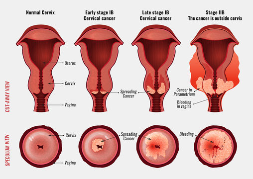

What is cervical cancer?
Cervical cancer develops in the cells of the cervix, the lower narrow neck of the uterus connecting to the vagina. Nearly all cases stem from persistent infection with high-risk strains of Human Papillomavirus (HPV), a very common virus passed through intimate skin-to-skin or sexual contact.
Highly preventable with routine care
Abnormal precancerous cervical cells usually take 10–15 years to become cancer, giving vaccination and regular screening a wide window to protect your health.

Signs & symptoms
Early cervical changes rarely cause noticeable symptoms, which is why routine screening matters even when you feel well. Watch for these warning signs:
-
Unusual vaginal bleeding Kutokwa damu isiyo ya kawaida ukeni
Bleeding between periods, after sex, or any bleeding after menopause.
-
Unusual vaginal discharge Majimaji yasiyo ya kawaida ukeni
Persistent watery, blood-streaked, or foul-smelling discharge.
-
Pelvic pain or pain during sex Maumivu ya nyonga au wakati wa kujamiiana
Persistent lower pelvic ache or pain during intercourse.
Do not wait to check bleeding after sex or menopause
Many causes of unusual bleeding are non-cancerous and treatable, but prompt medical assessment saves lives.
Three pillars of prevention
HPV Vaccination
Protects against the high-risk HPV strains behind most cervical cancers. Offered free to girls aged 9–14 in Kenya and effective for older teens and adults up to age 45.
Routine Screening
Pap smears, HPV DNA tests, or VIA screening detect precancerous changes early. Women aged 25–65 should screen every 3–5 years (more frequently if living with HIV).
Risk Reduction
Consistent condom use lowers HPV transmission risk and protects against other STIs; avoiding smoking also helps your immune system clear HPV infections.
Cervical cancer questions
No. The immune system clears most HPV infections within 1–2 years without harm. Only long-lasting infection with high-risk strains can gradually cause cell changes, which follow-up screening catches early.
It can feel slightly uncomfortable for a few seconds, but it should not be sharply painful. Let your nurse or doctor know if you feel pain — they can adjust or use a smaller speculum.